Senior marketing leader.
Hands-on builder.
18 years in B2B marketing. I've built brands and led GTM at AWS, Criteo, and Brevo, and I've built from zero, with no playbook, no team, and a deadline.
I work at the intersection of marketing strategy, AI systems, and operational execution. I find genuine pleasure in the hands-on, technical side of the work, not just the strategy.
The strategic depth of big-tech.
The agility of someone who's built from scratch.
I started in brand and creative, moved into GTM and demand generation, then into CMO leadership. Along the way I worked across three continents, APAC, EMEA, and NAM, at companies ranging from 15-person seed startups to global organisations of 100,000-plus.
The thread across all of it: I've always been the person who sits at the intersection of strategy and execution. I build the plan and I build the thing. I don't hand off to someone else to implement.
When AI entered the picture seriously in 2022, I didn't just add it to my toolkit. I rebuilt how I work around it. Today every engagement I run, from a two-week audit to an 18-month fractional CMO retainer, has AI embedded in the operating model from day one.
I'm based in Paris. I work in English and French. I work globally.
The Focus4ward philosophy.
Focus first. Then move forward. Strategy before tools. Clarity before channels. Data as the engine. AI as leverage, not identity.
Strategy before execution
Never start execution before strategic clarity. The most common marketing mistake is moving fast in the wrong direction. The audit is always first.
Clarity before channels
If you don't know what you stand for and who you're talking to, no channel will save you. Positioning is the work. Everything else is amplification.
AI as leverage, not identity
AI is a strategic multiplier. The companies that win with AI aren't the ones who use the most tools. They're the ones who ask the right questions first.
Embedded, not advisory
I work inside your business, not alongside it. Strategy and execution in the same hands. You get someone who owns the outcome, not just the recommendation.
Systems over heroics
If quality depends on one person's availability, you don't have a marketing function. Every engagement I run leaves systems that work without me.
Results that are real
Not vanity metrics. Pipeline, revenue, brand visibility, AI search presence. Marketing that knows whether it's working, and can prove it.
Not a consultant who advises.
A leader who executes.
Three reasons this works. Three reasons clients keep me in the room when the work gets real.
I've done this before
From early-stage startups to unicorns to the Fortune 500. I've seen every business model and leadership style. I know what great looks like and how to build it in your context.
I'm hands-on
In the work from day one, focused on making real progress. I blend clear direction with hands-on execution to create the things that drive real outcomes.
I'm part of your team
I don't work from the outside. I embed. Strategy and execution in the same hands. Same goals, same rhythm, fully aligned with how you operate.
My clients say it best.
"We had a great product and no way to tell the world about it. We needed to evolve: new clients, new markets, a new identity that matched our ambitions. We brought Miri in for a rename and rebrand. She ended up building our entire marketing function from scratch, from positioning to pipeline to the systems that keep it running."

"Miri shaped our 360 marketing plan, drove our rebrand and website relaunch, and created a clearer, stronger identity. She improved how marketing and sales connect and brought thoughtful leadership and consistent results. A great match for any SaaS marketing role."

"Miri has been mentoring our marketing team and has been a great partner. She delivered a clear audit, identified key improvements, and helped us build and carry out a strong marketing strategy. Across lead gen, branding, and positioning, she brings valuable tools and guidance."

Frequently asked
Is Miri available full-time, or only on a fractional basis?
Focus4ward engagements are fractional and project-based, not full-time employment, ranging from a two-week audit to an 18-month fractional CMO retainer. The model is embedded rather than advisory: I work inside the business and own the outcome, across several clients rather than one payroll.
What company stages and industries does Miri work with?
B2B companies from 15-person seed startups to global organisations of 100,000-plus, across SaaS, MarTech, AdTech, InsurTech, and cloud. The career spans three continents (APAC, EMEA, NAM) and roles at AWS, Criteo, Brevo, and Aprovall.
Does Miri build the systems herself or just advise?
She builds. The thread across 18 years is sitting at the intersection of strategy and execution: building the plan and building the thing, not handing off to someone else to implement. Since 2022, every engagement has AI embedded in the operating model from day one.
Where is Miri based and what languages does she work in?
Paris, working in English and French, with clients globally.
Let's build something real.
Strategy first. Systems built. Results that scale.
Book a call